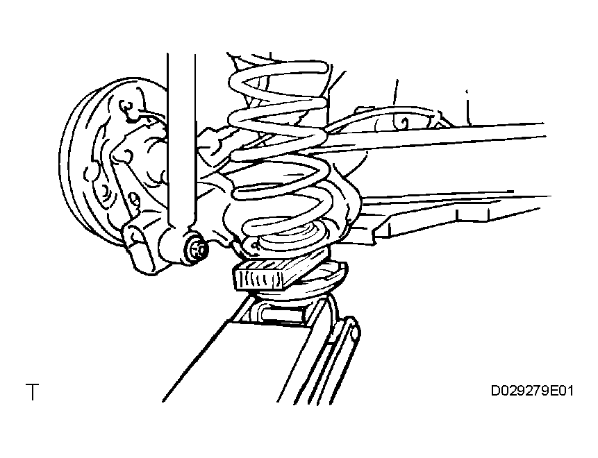
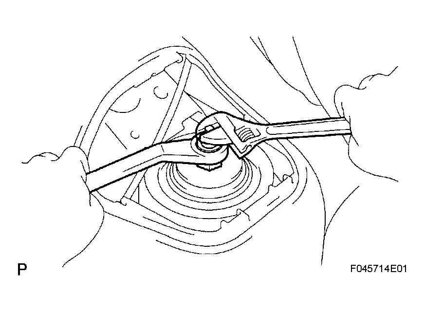
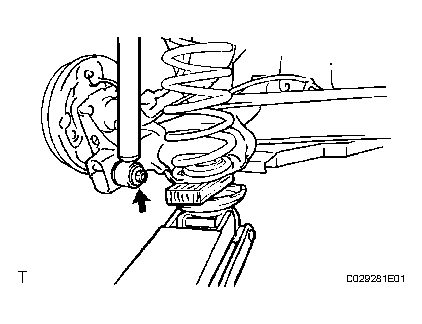

Rear Shock Absorber: Removal
- REMOVE REAR ABSORBER CAP
- REMOVE REAR WHEEL
- REMOVE REAR SHOCK ABSORBER ASSEMBLY LH
- Support the axle beam with a jack.

Courtesy of © TOYOTA, LICENSE AGREEMENT TMS1002
- While holding the pinion rod, remove the 2 nuts.
- Remove the cushion retainer and the suspension support.

Courtesy of © TOYOTA, LICENSE AGREEMENT TMS1002
- Remove the nut, spacer and shock absorber assembly.
- Remove the suspension support from the shock absorber.

Courtesy of © TOYOTA, LICENSE AGREEMENT TMS1002